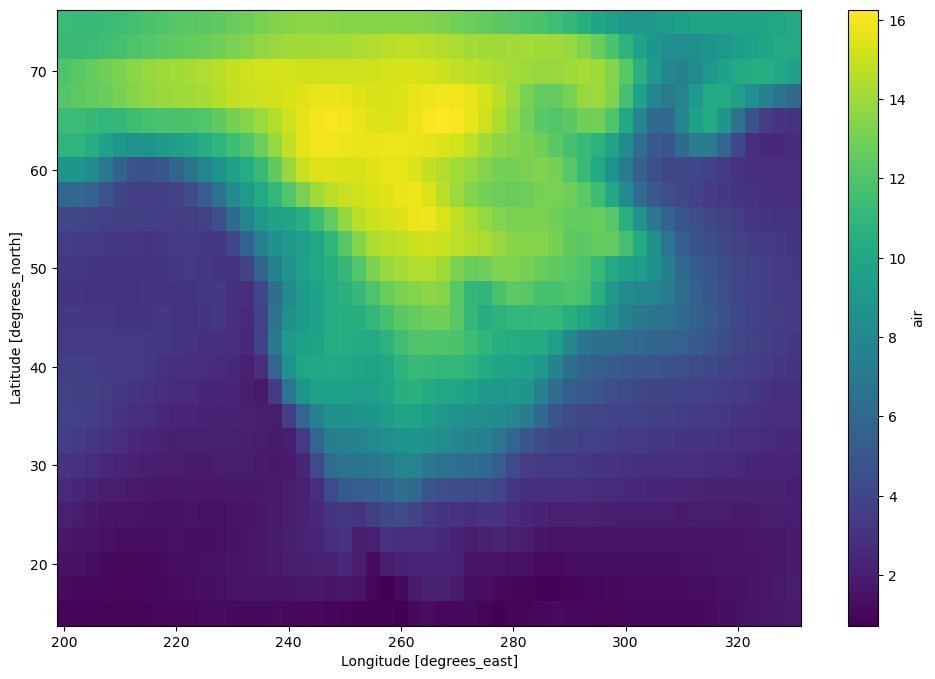

{kind=link}
你可以在 在线实验环境 中运行本 notebook  ，或在 GitHub 上查看源文件。
，或在 GitHub 上查看源文件。

Dask Arrays —— 并行化的 numpy#
用分块算法实现并行、大于内存的 n 维数组。
并行：用上你电脑上的所有核心
大于内存：把数组切成许多小块，按尽量节省内存占用的顺序处理这些小块，并有效地从磁盘流式读取数据，从而处理比可用内存更大的数据集
分块算法：把大计算拆成许多小计算来完成

换句话说，Dask Array 用分块算法实现了 NumPy ndarray 接口的一个子集，把大数组切成许多小数组。这样我们就能用上所有核心，计算比内存更大的数组。这些分块算法由 Dask 任务图来协调。
本 notebook 会先从零实现一些分块算法，建立直觉。 然后我们用 Dask Array、以熟悉的类 NumPy API，并行分析大型数据集。
相关文档
创建数据集#
创建本 notebook 会用到的数据集：
[1]:
%run prep.py -d random
- 正在生成随机数组数据...
启动 Client#
[2]:
from dask.distributed import Client
client = Client(n_workers=4)
client
[2]:
Client
Client-b5589a49-b25f-11f1-9204-3833c5e3e057
| Connection method: Cluster object | Cluster type: distributed.LocalCluster |
| Dashboard: http://127.0.0.1:8787/status |
Cluster Info
LocalCluster
8085257b
| Dashboard: http://127.0.0.1:8787/status | Workers: 4 |
| Total threads: 4 | Total memory: 15.62 GiB |
| Status: running | Using processes: True |
Scheduler Info
Scheduler
Scheduler-38ae7907-1c87-43bc-99b8-c289077920cf
| Comm: tcp://127.0.0.1:36519 | Workers: 4 |
| Dashboard: http://127.0.0.1:8787/status | Total threads: 4 |
| Started: Just now | Total memory: 15.62 GiB |
Workers
Worker: 0
| Comm: tcp://127.0.0.1:43557 | Total threads: 1 |
| Dashboard: http://127.0.0.1:41591/status | Memory: 3.90 GiB |
| Nanny: tcp://127.0.0.1:36609 | |
| Local directory: /tmp/dask-worker-space/worker-0ajpm83o | |
Worker: 1
| Comm: tcp://127.0.0.1:40363 | Total threads: 1 |
| Dashboard: http://127.0.0.1:39607/status | Memory: 3.90 GiB |
| Nanny: tcp://127.0.0.1:36271 | |
| Local directory: /tmp/dask-worker-space/worker-oq4mdtrm | |
Worker: 2
| Comm: tcp://127.0.0.1:40431 | Total threads: 1 |
| Dashboard: http://127.0.0.1:36935/status | Memory: 3.90 GiB |
| Nanny: tcp://127.0.0.1:42095 | |
| Local directory: /tmp/dask-worker-space/worker-1c_xikg1 | |
Worker: 3
| Comm: tcp://127.0.0.1:40715 | Total threads: 1 |
| Dashboard: http://127.0.0.1:44753/status | Memory: 3.90 GiB |
| Nanny: tcp://127.0.0.1:38343 | |
| Local directory: /tmp/dask-worker-space/worker-8qjsv_pm | |
分块算法速览#
我们来并排比较：用 NumPy 数组和 Dask 数组分别对数组元素求和。
[3]:
import numpy as np
import dask.array as da
[4]:
# NumPy 数组
a_np = np.ones(10)
a_np
[4]:
array([1., 1., 1., 1., 1., 1., 1., 1., 1., 1.])
我们知道可以用 sum() 求数组元素之和。但为了展示分块操作长什么样，我们改成这样：
[5]:
a_np_sum = a_np[:5].sum() + a_np[5:].sum()
a_np_sum
[5]:
10.0
注意上面计算里的两次求和完全独立，因此可以并行。 要用 Dask 数组做到这一点，需要定义我们的“切片”。做法是用变量 chunks 指定每个块里要有多少元素。
[6]:
a_da = da.ones(10, chunks=5)
a_da
[6]:
|
||||||||||||||||
重要！
要得到两个块，我们指定 chunks=5，也就是每个块 5 个元素。
[7]:
a_da_sum = a_da.sum()
a_da_sum
[7]:
|
||||||||||||||||
任务图#
一般来说，人写的代码要靠编译器或解释器，计算机才能理解。转到并行执行时，人们往往希望把一部分责任从编译器转移到人身上，因为分析、优化和执行常常被写进程序本身。这时，我们经常把程序结构显式地表示为程序里的数据。
在 Dask 里我们使用任务调度：把程序拆成许多中等大小的任务（计算单元）。我们把这些任务表示为图中的节点；如果一个任务依赖另一个任务产生的数据，就在它们之间连边。然后请任务调度器按这些数据依赖执行图，并在可能的地方利用并行，让多个独立任务同时运行。
[8]:
# 用 cytoscape 可视化底层 Dask 图
a_da_sum.visualize(engine="cytoscape")
[8]:
[9]:
a_da_sum.compute()
[9]:
10.0
性能对比#
来看一个更有意思的例子。我们创建一个服从正态分布的 20,000 × 20,000 数组（下面代码实际用的是 30,000），并沿其中一个轴求均值。
注意：
如果你在 Binder 上运行，NumPy 那个例子可能需要改小一点，否则可能内存不够。
NumPy 版本#
[10]:
%%time
xn = np.random.normal(10, 0.1, size=(30_000, 30_000))
yn = xn.mean(axis=0)
yn
CPU times: user 20.6 s, sys: 424 ms, total: 21 s
Wall time: 20.2 s
[10]:
array([10.00101857, 9.99940001, 9.99979118, ..., 9.99977423,
9.9992417 , 9.99952816])
Dask array 版本#
[11]:
xd = da.random.normal(10, 0.1, size=(30_000, 30_000), chunks=(3000, 3000))
xd
[11]:
|
||||||||||||||||
[12]:
xd.nbytes / 1e9 # 惰性处理的输入有多少 GB
[12]:
7.2
[13]:
yd = xd.mean(axis=0)
yd
[13]:
|
||||||||||||||||
[14]:
%%time
xd = da.random.normal(10, 0.1, size=(30_000, 30_000), chunks=(3000, 3000))
yd = xd.mean(axis=0)
yd.compute()
CPU times: user 557 ms, sys: 71.9 ms, total: 629 ms
Wall time: 8.75 s
[14]:
array([10.00040005, 9.99941646, 10.00010547, ..., 9.99936624,
9.99927253, 10.00060081])
值得思考的问题：
如果 Dask 的 chunks=(10000,10000)，会发生什么？
如果 Dask 的 chunks=(30,30)，会发生什么？
练习：
对 Dask 数组，计算 x 与其转置之和沿 axis=1 的均值。
[15]:
# 在此编写代码
参考答案
[16]:
x_sum = xd + xd.T
res = x_sum.mean(axis=1)
res.compute()
[16]:
array([20.00103599, 19.9996686 , 20.00031404, ..., 19.99978876,
19.99992753, 20.00078776])
选择合适的分块大小#
这一节受 Genevieve Buckley 一篇 Dask 博客的启发，原文在这里。
刚接触 Dask array 时，一个常见问题是：怎样才算好的分块大小？什么是“好”，又该如何判断？
先认识 chunks#
可以把 Dask 数组想成由许多更小分块组成的大结构。这些分块通常各自是一个 numpy 数组，再拼起来形成更大的 Dask 数组。
如果你有一个 Dask 数组，想了解分块及其大小，可以用 chunksize 和 chunks 属性。在 Jupyter notebook 里，也可以通过 HTML 展示来可视化 Dask 数组。
[17]:
darr = da.random.random((1000, 1000, 1000))
darr
[17]:
|
||||||||||||||||
注意创建这个 Dask 数组时我们没有指定 chunks。Dask 默认使用 chunks='auto'，以迁就比较理想的分块大小。想了解自动分块如何工作，可以看文档 https://docs.dask.org/en/stable/array-chunks.html#automatic-chunking
darr.chunksize 显示最大的分块大小。如果你预期数组的分块大小均匀，这是很好的摘要信息。如果分块不规则，darr.chunks 会沿每个维度给出所有分块的显式大小。
[18]:
darr.chunksize
[18]:
(255, 255, 255)
[19]:
darr.chunks
[19]:
((255, 255, 255, 235), (255, 255, 255, 235), (255, 255, 255, 235))
我们改一下例子，再多探索一点分块。可以重新分块（rechunk）：
[20]:
darr = darr.rechunk({0: -1, 1: 100, 2: "auto"})
[21]:
darr
[21]:
|
||||||||||||||||
[22]:
darr.chunksize
[22]:
(1000, 100, 167)
[23]:
darr.chunks
[23]:
((1000,),
(100, 100, 100, 100, 100, 100, 100, 100, 100, 100),
(167, 167, 167, 167, 167, 165))
练习：
在某一轴上把 chunk 指定为 -1，会做什么？
太小会有问题#
如果分块太小，每个任务真正做的工作就非常少，协调这些任务的开销会让整个过程非常低效。
一般来说，Dask 调度器协调单个任务大约需要一毫秒。因此我们希望计算时间相对更长，大约是秒这个量级。
Genevieve Buckley 的一个直观类比：
想象我们在盖房子。这是个大工程，如果只有一个工人会太慢。于是我们有一队工人和一位工头。工头相当于 Dask 调度器：他们的工作是告诉工人该做什么。假设墙角有一大堆砖要砌墙。如果工头（Dask 调度器）让工人每次只搬一块砖到砌墙的地方，你可以想见这会有多慢、多低效！工人把大部分时间花在墙和砖堆之间来回走，真正砌墙的时间反而很少。我们可以更聪明一点。工头（Dask 调度器）可以让工人每次用独轮车拉回满满一车砖。这样工人在墙和砖堆之间走动的时间少得多，墙也会快得多砌完。
太大也会有问题#
分块太大同样有问题，因为你很可能内存不够。你会在仪表盘上看到数据被溢出（spill）到磁盘，性能随之下降。
如果往内存里加载了太多数据，Dask worker 会开始把数据写到磁盘以免崩溃。溢出到磁盘会明显变慢，因为多了大量读写。这是我们一定要避免的情况；可以看仪表盘上的 worker 内存图。橙色条表示接近上限，灰色表示数据正在溢出到磁盘。
要盯住这一点，请看 Dask 仪表盘上的 worker 内存图。橙色是警告，灰色表示正在溢出到磁盘——这可不好！更多技巧见下面使用 Dask 仪表盘的部分。想进一步了解内存图，请看仪表盘文档。
经验法则#
用户反馈：小于 1MB 的分块往往不好。一般来说，100MB 到 1GB 是比较合适的分块大小；超过 1 或 2GB 通常意味着你有非常大的数据集，和/或每个 worker 有很多内存。
上限：避免非常大的任务图。超过 10,000 或 100,000 个分块时，性能可能开始变差。
下限：要获得并行收益，分块数至少应等于可用的 worker 核心数（更好是核心数乘 2）。否则有些 worker 会闲着。
每个任务的计算时间应远大于调度该任务的时间。Dask 调度器协调单个任务大约要 1 毫秒，所以比较理想的任务计算时间是秒这个量级（而不是毫秒）。
分块应与磁盘上的数组存储对齐。现代 NDArray 存储格式（HDF5、NetCDF、TIFF、Zarr）允许按块存储数组，从而高效拉取数据块。不过数据存储的分块往往比 Dask array 理想的分块更细，因此常见做法是选择存储分块大小的整数倍，否则可能带来很高开销。例如，如果你加载的数据按 (100, 100) 分块，可以选择更大但仍能被 (100, 100) 整除的策略，比如 (1000, 2000)。
关于分块的更多建议见 https://docs.dask.org/en/stable/array-chunks.html
用 Zarr 存储的分块数据示例#
Zarr 是一种用于分块、压缩的 n 维数组的存储格式。Zarr 提供了处理 n 维数组的类和函数，用起来像 NumPy 数组（Dask array 也像 NumPy 数组），但数据被切成块，并且每一块都经过压缩。如果你已经熟悉 HDF5，Zarr 数组提供类似的功能，同时更灵活一些。
更多材料见 Zarr 教程
我们从 zarr 读取一个数组：
[24]:
import zarr
[25]:
a = da.from_zarr("data/random.zarr")
[26]:
a
[26]:
|
||||||||||||||||
注意这个数组已经分好块了，加载时我们什么都没指定。再注意这些分块大小比较合适。我们来求均值，看看要跑多久。
[27]:
%%time
a.mean().compute()
CPU times: user 58.7 ms, sys: 9.3 ms, total: 68 ms
Wall time: 229 ms
[27]:
0.5000794030591147
再加载一个 chunksize 小得多的例子，看看会发生什么
[28]:
b = da.from_zarr("data/random_sc.zarr")
b
[28]:
|
||||||||||||||||
[29]:
%%time
b.mean().compute()
CPU times: user 19.2 s, sys: 1.74 s, total: 20.9 s
Wall time: 32.4 s
[29]:
0.5000442175678859
练习：#
读取 b 时提供一个能改善均值计算时间的 chunksize。试几个不同的 chunks 值，看看会怎样。
[30]:
# 在此编写代码
[31]:
# 一种可能的答案（模仿原来的分块）。在 Binder 上 chunks 可能不同
c = da.from_zarr("data/random_sc.zarr", chunks=(6250000,))
c
[31]:
|
||||||||||||||||
[32]:
%%time
c.mean().compute()
CPU times: user 49.1 ms, sys: 6.25 ms, total: 55.3 ms
Wall time: 775 ms
[32]:
0.500044217567886
Xarray#
有些应用会遇到多维数据，同时处理所有这些维度有时会让人糊涂。Xarray 是一个开源项目和 Python 包，让带标签的多维数组更好用。
Xarray 深受 pandas（专注于带标签表格数据的流行分析库）启发，并大量借鉴了它。它特别适合处理 netCDF 文件（这也是 xarray 数据模型的来源），并与 Dask 紧密集成以做并行计算。
Xarray 在原始的类 NumPy 数组之上引入了维度、坐标和属性这些标签，从而让开发体验更直观、更简洁、更不容易出错。
我们来看看如何把 xarray 和 Dask 一起用：
[33]:
import xarray as xr
[34]:
ds = xr.tutorial.open_dataset(
"air_temperature",
chunks={ # 告诉 xarray 以 dask array 的方式打开数据集
"lat": 25,
"lon": 25,
"time": -1,
},
)
ds
[34]:
<xarray.Dataset> Size: 31MB
Dimensions: (lat: 25, time: 2920, lon: 53)
Coordinates:
* lat (lat) float32 100B 75.0 72.5 70.0 67.5 65.0 ... 22.5 20.0 17.5 15.0
* lon (lon) float32 212B 200.0 202.5 205.0 207.5 ... 325.0 327.5 330.0
* time (time) datetime64[ns] 23kB 2013-01-01 ... 2014-12-31T18:00:00
Data variables:
air (time, lat, lon) float64 31MB dask.array<chunksize=(2920, 25, 25), meta=np.ndarray>
Attributes:
Conventions: COARDS
title: 4x daily NMC reanalysis (1948)
description: Data is from NMC initialized reanalysis\n(4x/day). These a...
platform: Model
references: http://www.esrl.noaa.gov/psd/data/gridded/data.ncep.reanaly...[35]:
ds.air
[35]:
<xarray.DataArray 'air' (time: 2920, lat: 25, lon: 53)> Size: 31MB
dask.array<open_dataset-air, shape=(2920, 25, 53), dtype=float64, chunksize=(2920, 25, 25), chunktype=numpy.ndarray>
Coordinates:
* lat (lat) float32 100B 75.0 72.5 70.0 67.5 65.0 ... 22.5 20.0 17.5 15.0
* lon (lon) float32 212B 200.0 202.5 205.0 207.5 ... 325.0 327.5 330.0
* time (time) datetime64[ns] 23kB 2013-01-01 ... 2014-12-31T18:00:00
Attributes:
long_name: 4xDaily Air temperature at sigma level 995
units: degK
precision: 2
GRIB_id: 11
GRIB_name: TMP
var_desc: Air temperature
dataset: NMC Reanalysis
level_desc: Surface
statistic: Individual Obs
parent_stat: Other
actual_range: [185.16 322.1 ][36]:
ds.air.chunks
[36]:
((2920,), (25,), (25, 25, 3))
[37]:
mean = ds.air.mean("time") # 仪表盘上还没有动静
mean # 里面包含一个 dask array
[37]:
<xarray.DataArray 'air' (lat: 25, lon: 53)> Size: 11kB dask.array<mean_agg-aggregate, shape=(25, 53), dtype=float64, chunksize=(25, 25), chunktype=numpy.ndarray> Coordinates: * lat (lat) float32 100B 75.0 72.5 70.0 67.5 65.0 ... 22.5 20.0 17.5 15.0 * lon (lon) float32 212B 200.0 202.5 205.0 207.5 ... 325.0 327.5 330.0
[38]:
# 这时会在仪表盘上看到活动
mean.load()
[38]:
<xarray.DataArray 'air' (lat: 25, lon: 53)> Size: 11kB
array([[260.37644178, 260.18305137, 259.88662671, ..., 250.81590068,
251.93811644, 253.43804795],
[262.73439384, 262.79397603, 262.74933904, ..., 249.75590411,
251.58575685, 254.35926027],
[264.7687637 , 264.32730822, 264.06169521, ..., 250.60789041,
253.58351027, 257.71559932],
...,
[297.64986301, 296.95333219, 296.62931507, ..., 296.81092466,
296.28796233, 295.81645548],
[298.12920205, 297.93700685, 297.47039384, ..., 296.85954795,
296.7770274 , 296.44383562],
[298.36615068, 298.38573973, 298.11414384, ..., 297.33820548,
297.28144521, 297.30510274]])
Coordinates:
* lat (lat) float32 100B 75.0 72.5 70.0 67.5 65.0 ... 22.5 20.0 17.5 15.0
* lon (lon) float32 212B 200.0 202.5 205.0 207.5 ... 325.0 327.5 330.0标准的 Xarray 操作#
我们取出 air 变量做一些操作。无论底层数据存在 Dask 数组还是 NumPy 数组里，使用 xarray 对象的操作都是一样的。
[39]:
dair = ds.air
[40]:
dair2 = dair.groupby("time.month").mean("time")
dair_new = dair - dair2
dair_new
[40]:
<xarray.DataArray 'air' (time: 2920, lat: 25, lon: 53, month: 12)> Size: 371MB dask.array<sub, shape=(2920, 25, 53, 12), dtype=float64, chunksize=(2920, 25, 25, 1), chunktype=numpy.ndarray> Coordinates: * lat (lat) float32 100B 75.0 72.5 70.0 67.5 65.0 ... 22.5 20.0 17.5 15.0 * lon (lon) float32 212B 200.0 202.5 205.0 207.5 ... 325.0 327.5 330.0 * time (time) datetime64[ns] 23kB 2013-01-01 ... 2014-12-31T18:00:00 * month (month) int64 96B 1 2 3 4 5 6 7 8 9 10 11 12
当你希望结果是一个底层存着 NumPy 数组的 xarray.DataArray 时，调用 .compute() 或 .load()。
[41]:
# 仪表盘上会有动静
dair_new.load()
[41]:
<xarray.DataArray 'air' (time: 2920, lat: 25, lon: 53, month: 12)> Size: 371MB
array([[[[-5.14975806e+00, -5.47709821e+00, -9.83161290e+00, ...,
-2.06137097e+01, -1.25446667e+01, -6.77088710e+00],
[-3.88592742e+00, -3.90562500e+00, -8.17975806e+00, ...,
-1.87126210e+01, -1.11448750e+01, -5.52096774e+00],
[-2.71495968e+00, -2.44830357e+00, -6.68943548e+00, ...,
-1.70037097e+01, -9.99704167e+00, -4.41282258e+00],
...,
[-1.02609677e+01, -9.05825893e+00, -9.39375000e+00, ...,
-1.53932661e+01, -1.01605833e+01, -6.97169355e+00],
[-8.58774194e+00, -7.50187500e+00, -7.61467742e+00, ...,
-1.35697581e+01, -8.43441667e+00, -5.52358871e+00],
[-7.04653226e+00, -5.84366071e+00, -5.70947581e+00, ...,
-1.18160887e+01, -6.54195833e+00, -4.02806452e+00]],
[[-5.05750000e+00, -3.99995536e+00, -9.17193548e+00, ...,
-2.52225000e+01, -1.53297500e+01, -5.93338710e+00],
[-4.40729839e+00, -3.25986607e+00, -8.36620968e+00, ...,
-2.44295565e+01, -1.41292083e+01, -5.66028226e+00],
[-4.01028226e+00, -2.77741071e+00, -7.87350806e+00, ...,
-2.40149194e+01, -1.34914583e+01, -5.78564516e+00],
...
[ 3.33870968e-01, 1.17812500e+00, 8.39112903e-01, ...,
-3.56907258e+00, -2.47420833e+00, -1.16564516e+00],
[ 6.08588710e-01, 1.47191964e+00, 1.11951613e+00, ...,
-3.59879032e+00, -2.50400000e+00, -1.15669355e+00],
[ 6.59838710e-01, 1.48723214e+00, 1.03766129e+00, ...,
-3.84629032e+00, -2.71833333e+00, -1.33141129e+00]],
[[ 5.35524194e-01, 4.00892857e-01, 3.08104839e-01, ...,
-1.68060484e+00, -1.12145833e+00, -1.90927419e-01],
[ 8.51572581e-01, 8.73303571e-01, 6.26653226e-01, ...,
-1.33471774e+00, -7.66625000e-01, 1.03225806e-01],
[ 1.04084677e+00, 1.23178571e+00, 8.63104839e-01, ...,
-1.06616935e+00, -5.31083333e-01, 3.14475806e-01],
...,
[ 4.71854839e-01, 1.32928571e+00, 1.15487903e+00, ...,
-3.23411290e+00, -2.23962500e+00, -1.11032258e+00],
[ 4.14193548e-01, 1.23397321e+00, 1.07866935e+00, ...,
-3.47326613e+00, -2.56187500e+00, -1.37540323e+00],
[ 5.32258065e-02, 8.10000000e-01, 6.73266129e-01, ...,
-4.07241935e+00, -3.12895833e+00, -1.84770161e+00]]]])
Coordinates:
* lat (lat) float32 100B 75.0 72.5 70.0 67.5 65.0 ... 22.5 20.0 17.5 15.0
* lon (lon) float32 212B 200.0 202.5 205.0 207.5 ... 325.0 327.5 330.0
* time (time) datetime64[ns] 23kB 2013-01-01 ... 2014-12-31T18:00:00
* month (month) int64 96B 1 2 3 4 5 6 7 8 9 10 11 12用 xarray 做时间序列操作#
因为我们有 datetime 索引，时间序列操作会很高效。例如可以先 resample，再把结果画出来。
[42]:
dair_resample = dair.resample(time="1w").mean("time").std("time")
[43]:
dair_resample.load().plot(figsize=(12, 8))
[43]:
<matplotlib.collections.QuadMesh at 0x7f2924da7160>

进一步学习#
xarray 和 zarr 都有自己的教程，会讲得更深入：
关闭集群#
养成习惯：自己创建的 Dask 集群用完后都关掉。
[44]:
client.shutdown()